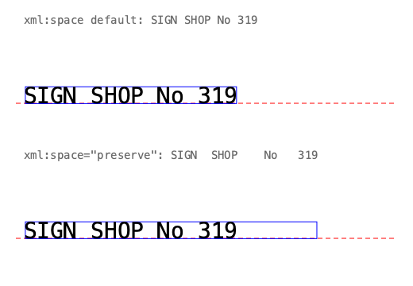
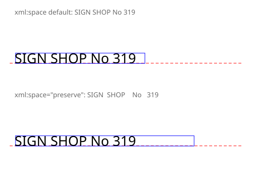
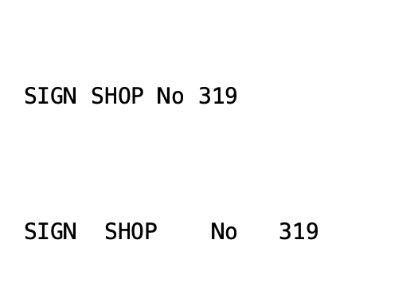
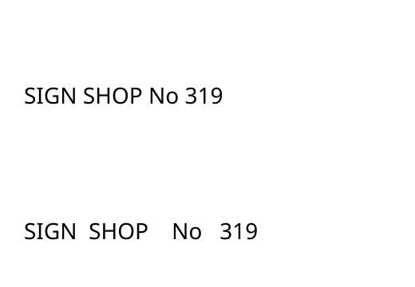

左侧为原演示本次运行结果，右侧为等价显式文本参考。独立测量只统计黑色字形，排除红色基准线和蓝色边界框。

原演示实际传入的SVG


参考SVG

{
"source": "/Users/lichao/Desktop/xpert/user-feedback/runs/replay-recovery-20261118/recover-20261118-12587-text-whitespace/local-frozen-source/cairosvg/__init__.py",
"evaluated_demo": "/Users/lichao/Desktop/xpert/user-feedback/runs/replay-recovery-20261118/recover-20261118-12587-text-whitespace/local-frozen-source/demo/text_whitespace_sign.py",
"tests": 3,
"passed": 1,
"failed": 2,
"checks": [
{
"name": "default-panel-glyphs-match-reference",
"actual": [
32,
109,
297,
130
],
"expected": [
32,
109,
297,
130
],
"passed": true
},
{
"name": "preserve-panel-glyphs-match-reference",
"actual": [
32,
279,
297,
300
],
"expected": [
32,
279,
399,
300
],
"passed": false
},
{
"name": "preserve-panel-is-wider-than-default",
"default_width": 265,
"preserve_width": 265,
"expected_preserve_width": 367,
"passed": false
}
],
"font": "Menlo"
}